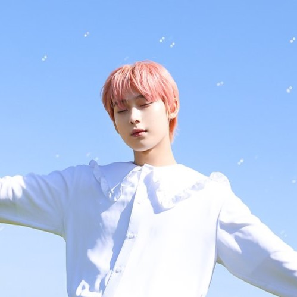

Sunoo's Profile
Home

Stage Name: Sunoo
Korean Name: Kim Seon Woo(김선우)
English Name: William Kim
Age: 20
Birthday: June 24, 2003
Height: 175 cm (5’9″)
Position: Vocalist
MBTI Type: ENFP
Representative Emoticon:🦊
Small Facts About Him:
He has an older sister
In middle school, he was the class president and a student council member.
Apart from mint chocolate chip ice-cream, he also loves spicy food.
He can play the piano
His favorite colors are mint, purple, pink and blue.